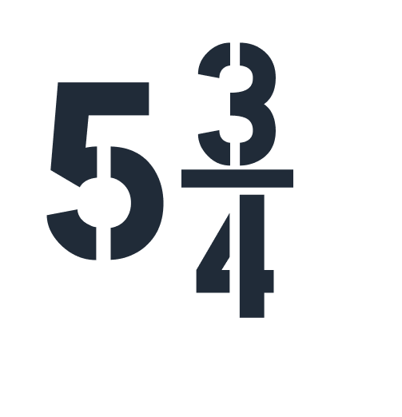

Definitions Matching
- Pharynx
- Heart
- Ligament
- Alveoli
- Diaphragm
- Bone to bone
- Spongy air sack
- Separates systems
- Throat
- Pump
True - False
- The diaphragm is part of the Digestive System
- The heart has four chambers and two sides
- The heart has four chambers and two sides
- The neural system controls autonomic functions
- Osteoporosis is a disease that blocks blood from flowing in the arteries
- Osteoporosis is a disease that blocks blood from flowing in the arteries
- Asthma is a condition that causes trouble breathing
Multiple Choice
-
Muscle that helps fill up the lungs
- Diaphragm
- Tricep
- Bicep
- Heart
- Alveoli
-
Disease that blocks oxygen from reaching the heart
- Osteoporosis
- Obesity
- Crohn's disease
- Atherosclerosis
- Hypertension
-
Parts of the digestive system
- mouth, salivary glands, esophagus, liver, stomach, gallbladder
- pancreas, small intestine, large intestine, rectum, anus
- salivary glands, esophagus, liver, heart
- Combine answers 1 and 2
- Combine answers 1 and 3
-
Two places that supply/exchange oxygen and carbon dioxide
- Alveoli and capillaries
- Liver and pancreas
- Lungs and alveoli
- Veins and neuron
- Heart and lungs
-
Main function of the pancreas
- Helps the autonomic system breathe
- Exchanges oxygen and carbon dioxide
- Helps digestion and regulates blood sugar
- Combine answers 1 and 2
- Supports the heart
-
Autonomic nervous system controls
- Muscles to lift heavy elements
- The right leg
- Automatic functions such as heart beating and breathing
- Automatic functions such as swimming and talking
- None of the above
-
Muscle that works in the opposite direction
- Heart and tricep
- Bicep and tricep
- Bimplumius and Laterus
- Oculos and bicep
- Trice and accep
-
Canadian Food Guide-How many servings of meat/alternative per day
- 2-5
- 1-2
- 5-6
- 1-3
- 3-4
Explain Concepts
Choose one of the 5 main organ systems and explain how it works
Explain how 2 or more organ systems rely on each other to function
The effects of the development of technology on our health and bodies